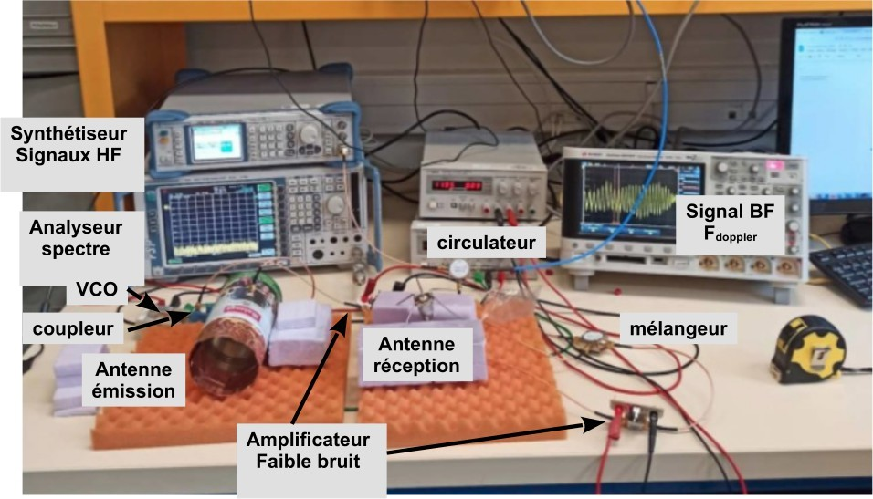
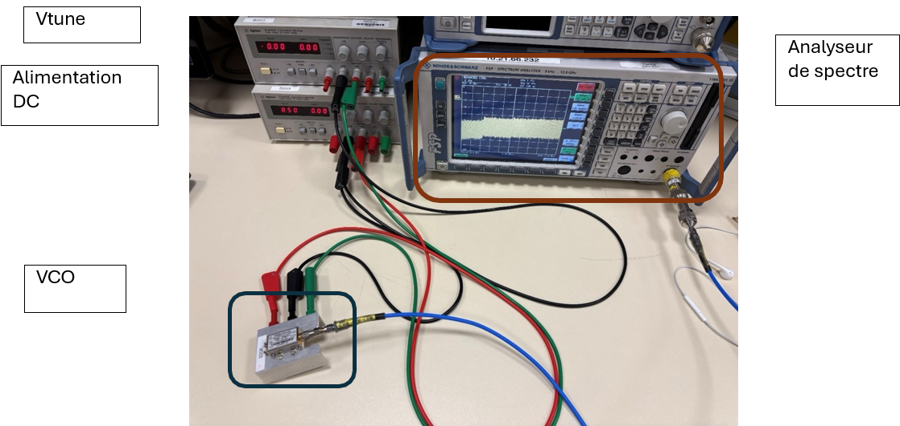
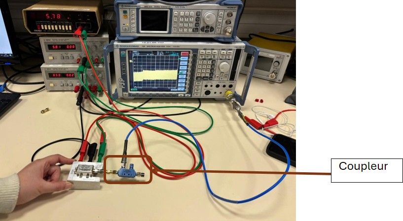
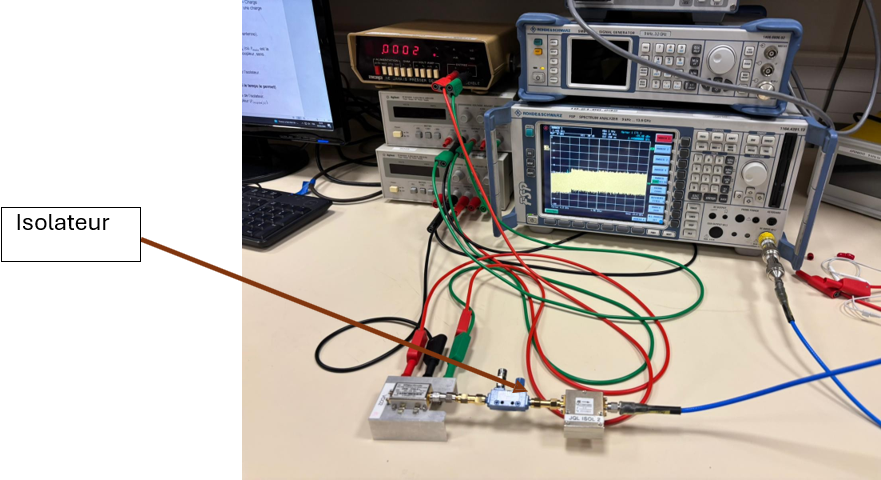
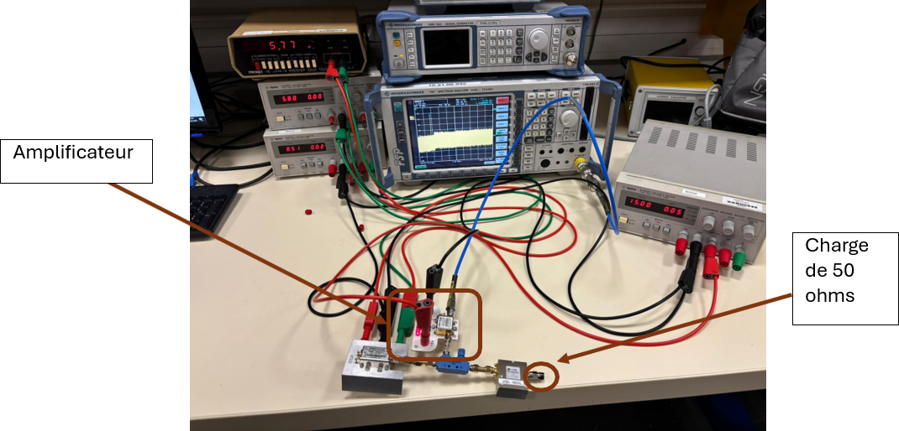
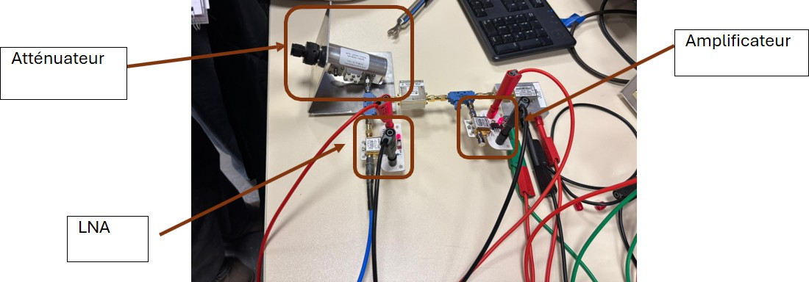
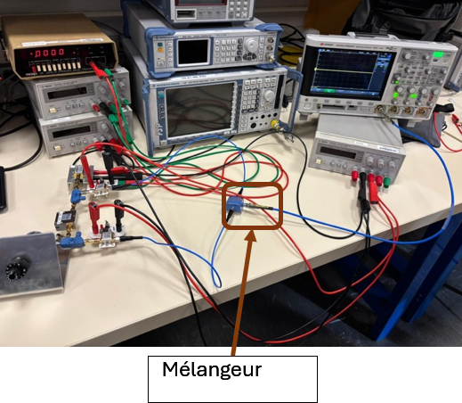
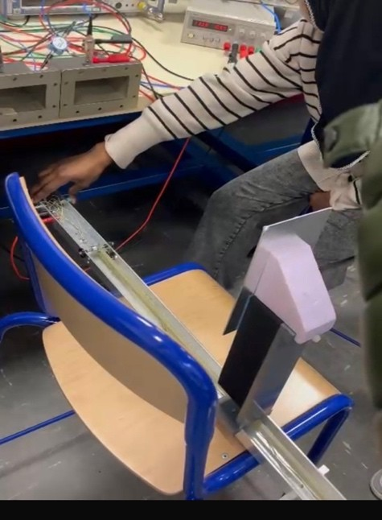
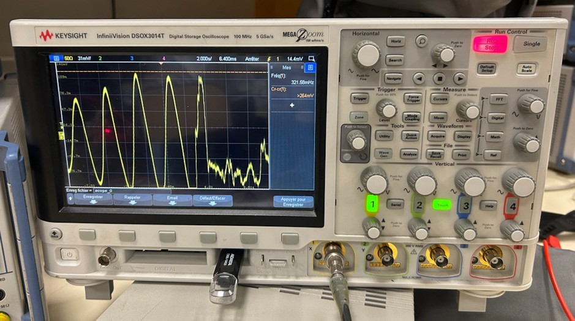

TP HYPERFRÉQUENCES · INTÉGRATION · UNIVERSITÉ PARIS NANTERRE · 2026
Radar CW / Doppler
Intégration d'un radar à 2,45 GHz, bloc par bloc
Chaque bloc RF est branché, mesuré et comparé aux valeurs attendues avant d'ajouter le suivant. Le radar complet détecte le mouvement d'une cible par effet Doppler. TP réalisé en groupe.
Le schéma d'intégration
Les 7 blocs, leurs références et les valeurs mesurées. Les numéros sont ceux des étapes.
Le trajet du signal. Le VCO alimente le coupleur. La voie principale part vers l'antenne Tx en passant par l'isolateur. La voie couplée, amplifiée, devient la référence LO du mélangeur.
À la réception. L'écho capté par l'antenne Rx est amplifié par le LNA, puis mélangé au LO. La sortie FI est le battement Doppler, observé à l'oscilloscope.
Pourquoi un coupleur ? Il prélève une partie du signal du VCO pour le LO, sans interrompre la voie d'émission.
Intégration pas à pas
À chaque étape : le branchement réel, les valeurs mesurées et la raison du montage.

VCO → DC block + atténuateur 10 dB → analyseur de spectre
Pourquoi corriger ? Câbles, DC block et atténuateur ajoutent 20,39 dB : −13,45 dBm lus donnent 6,94 dBm réels.

VCO → coupleur. Voie principale et voie couplée mesurées tour à tour, l'autre sur 50 Ω.
Pourquoi 50 Ω ? Une voie laissée ouverte provoquerait des réflexions et fausserait la mesure.

VCO → coupleur → isolateur → analyseur de spectre
Pourquoi ? Il protège le VCO des réflexions renvoyées par l'antenne et l'environnement.

Voie couplée → ZX60-3018G+ → analyseur. Voie principale sur 50 Ω.
Pourquoi ? Le mélangeur demande environ 7 dBm au port LO, avec un ampli resté linéaire (PLO ≪ P1dB).

Isolateur → atténuateur variable → LNA → analyseur de spectre
Pourquoi ? L'atténuateur simule l'affaiblissement du trajet dans l'air, avant de passer aux antennes.

RF ← LNA · LO ← ampli · FI → oscilloscope (entrée 50 Ω)
Précaution : jamais d'analyseur de spectre sur la FI. Le signal est continu et pourrait l'endommager.

Atténuateur retiré · Tx ← isolateur · Rx → LNA · cible mobile devant les antennes
Pourquoi ? Avec une vraie cible, la FI devient le battement Doppler.
- DC block + atténuateur à l'entrée de l'analyseur
- Reflevel réglé pour ne pas saturer
- Voies non mesurées fermées sur 50 Ω
Résultat : le Doppler observé
Une main déplacée devant les antennes, et le battement apparaît à l'oscilloscope.

Cible : 39,5 cm parcourus en 20 s, soit v ≈ 0,019 m/s. Avec f0 = 2,45 GHz : fD ≈ 0,31 Hz, soit T ≈ 3,2 s.
À l'oscilloscope : 2 carreaux pour une demi-période à 1,6 s/div, soit T = 3,2 s. Calcul et mesure concordent.